El Portal de procesos es el sistema de Century Mold para pedir tiempo extra y transporte. Nóminas usa lo que ya quedó autorizado para armar, cada semana y por área, el formato de autorización de tiempo extra que se firma y se manda a pago.
El formato muestra, por empleado, las horas de cada día de la semana, su motivo y su P.O. o TB.
Sale de las solicitudes autorizadas. Tú lo revisas y, si hace falta, lo corriges.
Cuando está bien, lo firmas (queda bloqueado) y lo descargas en Excel.
Tus cambios son ajustes del formato: no modifican las solicitudes. Cada cambio lleva su motivo y queda en la bitácora.
Nóminas no autoriza, devuelve ni cancela solicitudes. Solo ve el tiempo extra de toda la planta, confirma lo que va al proveedor y trabaja el formato.
2. Primeros pasos
Entrar al portal
Abre https://centurymold-qro.web.app en tu navegador (Chrome, Edge o el de tu celular).
Escribe tu número de nómina.
Escribe tu contraseña. El ojito sirve para ver lo que escribes.
Toca Iniciar sesión.
Si no la recuerdas, toca ¿Olvidaste tu contraseña?. Solo se restablece en persona con Sistemas o Recursos Humanos.
Tu pantalla de inicio
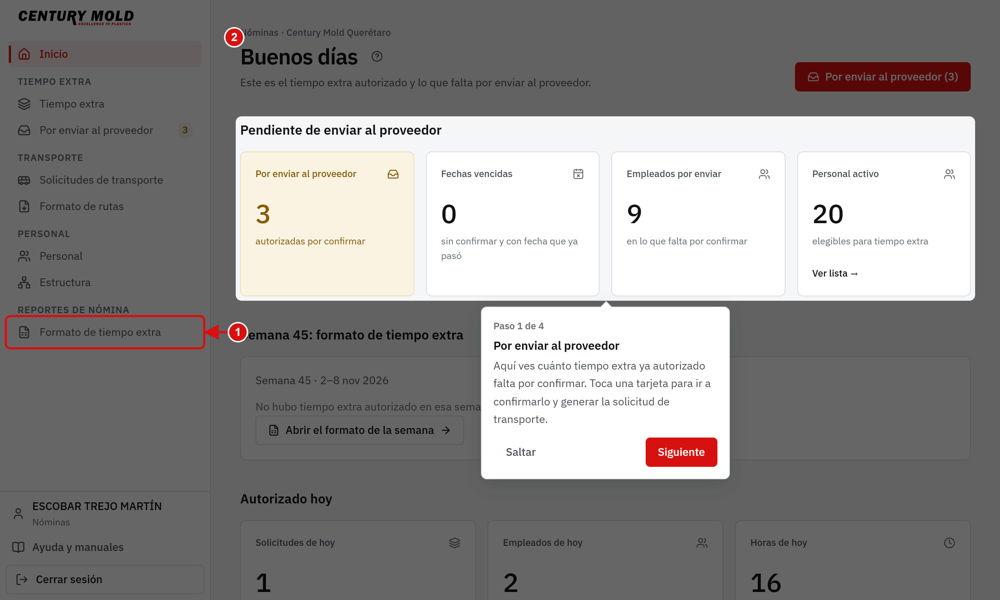
En el menú, bajo Reportes de nómina, está Formato de tiempo extra: tu pantalla principal.
El inicio resume el tiempo extra de la planta.
En el pie del menú están Ayuda y manuales (este manual y su guía rápida en PDF) y Cerrar sesión.
3. Elegir la semana
Al entrar a Formato de tiempo extra se abre la última semana completa. Cada área con tiempo extra aparece con su estado: Sin revisar, Ajustada o Firmada.
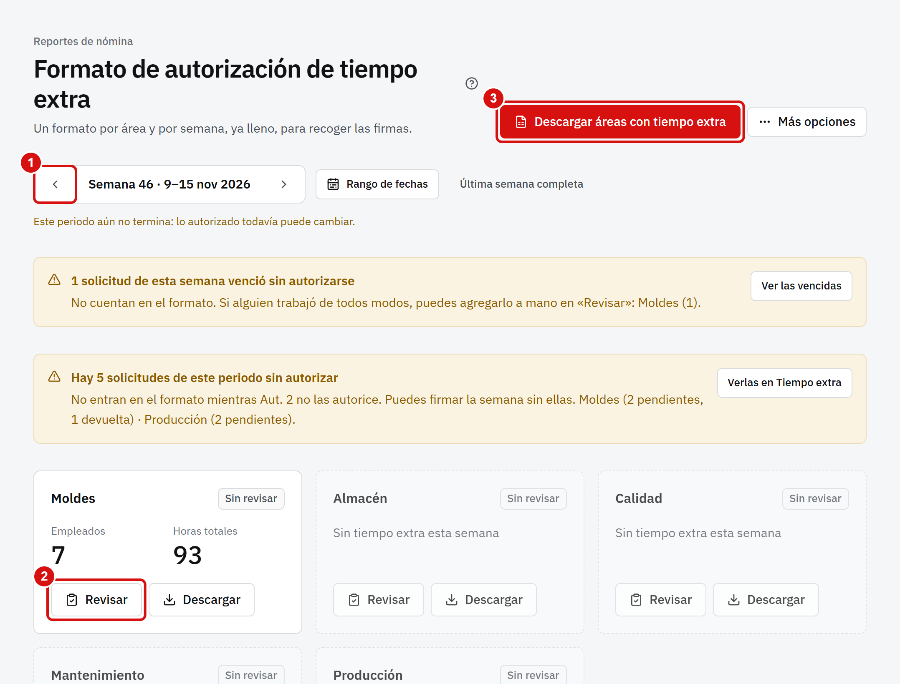
Las flechas cambian de semana. Para la semana en curso, toca Semana siguiente.
Revisar abre la hoja de esa área.
Descargar todas baja el Excel de todas las áreas con tiempo extra, con una hoja de resumen.
Arriba de las áreas, el portal te avisa si hay solicitudes de esa semana sin autorizar (no entran al formato; puedes firmar sin ellas) o vencidas (no cuentan; si alguien trabajó de todos modos, agrégalo a mano).
4. Revisar y corregir un área
La hoja se parece a Excel: una fila por empleado y una columna por día. Todo lo que ves viene de lo autorizado.
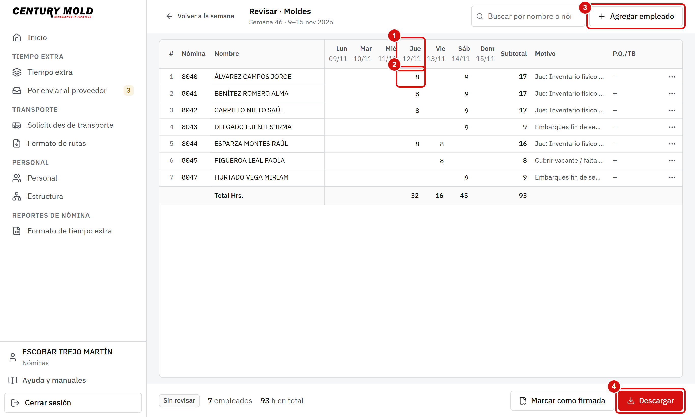
Cada columna es un día de la semana, con su fecha.
Cada celda trae las horas autorizadas de ese empleado ese día. Se escribe directo (acepta medios y cuartos: 0.5, 7.25).
Agregar empleado mete a alguien que no venía en las solicitudes.
Descargar baja el Excel del área.
Corregir horas
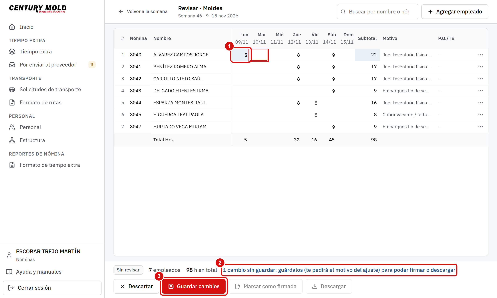
Escribe las horas en la celda y pulsa Tab, Enter o una flecha. La celda cambiada se pinta de otro color.
Arriba o abajo ves cuántos cambios sin guardar llevas.
Toca Guardar cambios cuando termines.
Para volver a lo autorizado en un renglón, usa el menú ⋯ de la fila › Restaurar lo autorizado.
5. Quitar, agregar o reemplazar
Quitar a alguien que no asistió
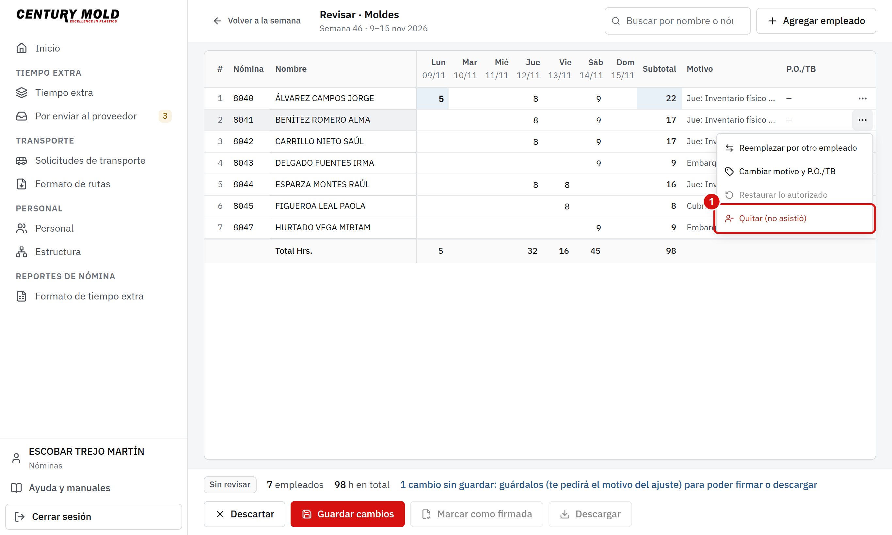
En el menú ⋯ de la fila, toca Quitar (no asistió).
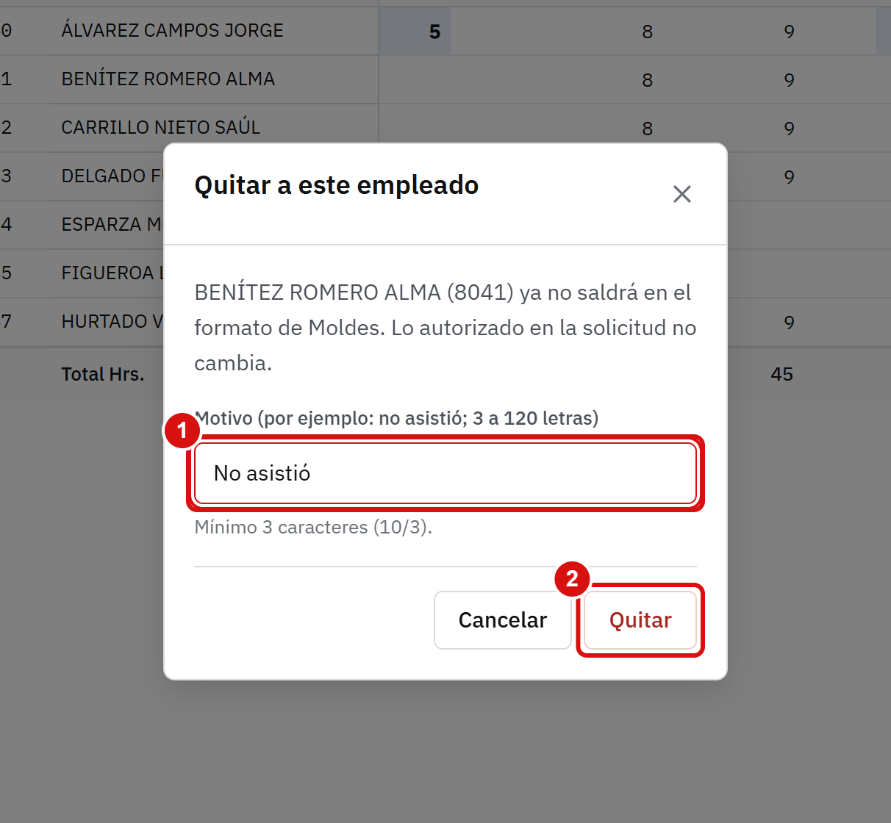
Escribe el motivo (por ejemplo, «No asistió»). Se pide en el momento.
Toca Quitar.
La fila queda tachada y ya no cuenta en el total. Con Restaurar lo autorizado puedes regresarla.
Agregar a alguien que no venía
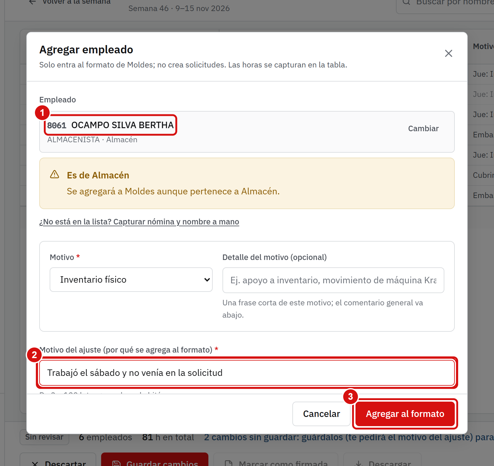
Toca Agregar empleado y busca a la persona por nómina o nombre.
Elige el motivo del tiempo extra y escribe el motivo del ajuste (por qué se agrega).
Toca Agregar al formato.
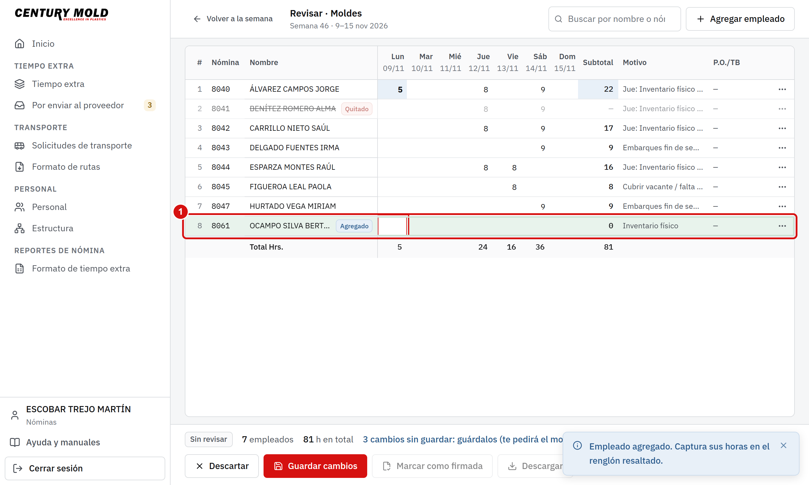
La fila nueva se resalta unos segundos y el cursor queda en su primera celda de horas: captura sus horas.
Un empleado agregado no crea solicitudes: solo entra al formato de esa área. Si no está en el padrón, puedes capturarlo a mano; queda marcado como «fuera del padrón».
También puedes reemplazar a alguien por otra persona (sus horas pasan a quien elijas) o cambiar el motivo y el P.O./TB de un renglón, desde el mismo menú ⋯.
6. Guardar, firmar y descargar
Guardar
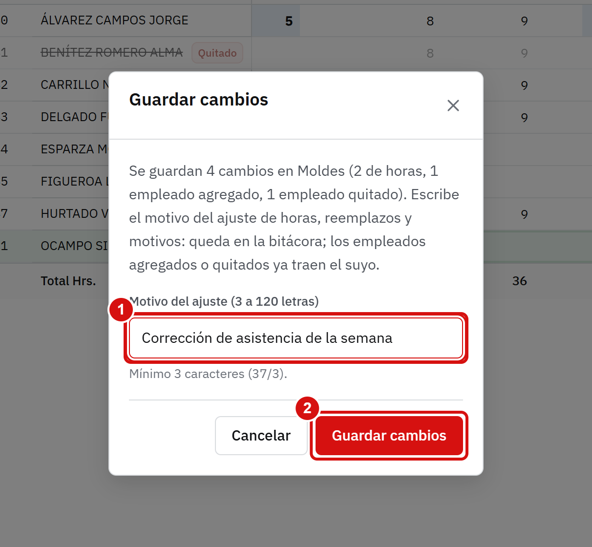
Toca Guardar cambios.
Si hay cambios de horas, reemplazos o de motivo, escribe el motivo del ajuste (de 3 a 120 letras): se aplica a todos y queda en la bitácora. Lo que agregaste o quitaste ya trae el suyo.
Confirma.
Con cambios sin guardar, Marcar como firmada y Descargar están apagados: guarda primero.
Firmar
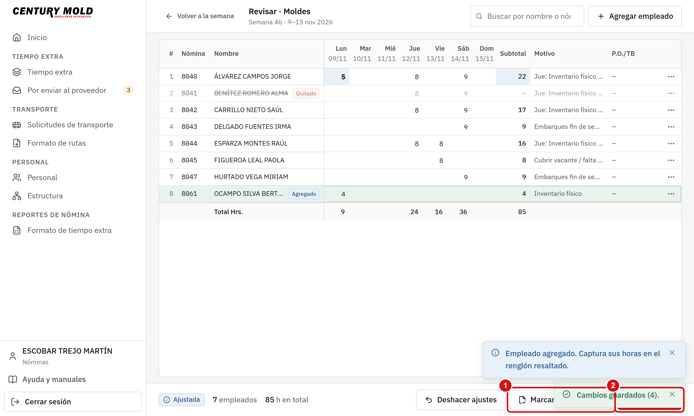
Marcar como firmada cierra el área: queda bloqueada.
Descargar baja el Excel con lo ya guardado.
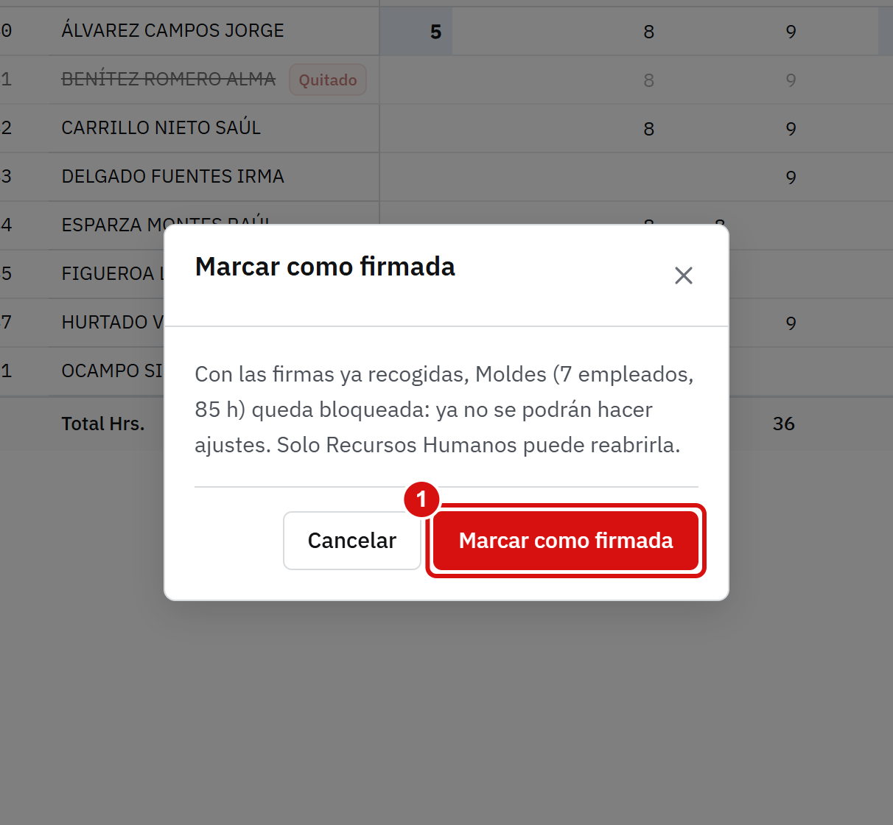
Confirma la firma.
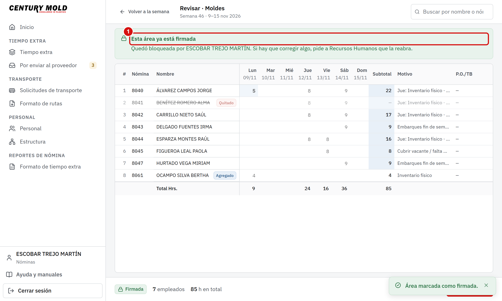
El aviso dice que el área ya está firmada. Desde ese momento nadie la cambia: solo Recursos Humanos puede reabrirla.
Al descargar, el portal te dice qué archivo bajó. Ábrelo desde el ícono de descargas del navegador o en la carpeta Descargas de tu computadora.
7. Consultar el tiempo extra de la planta
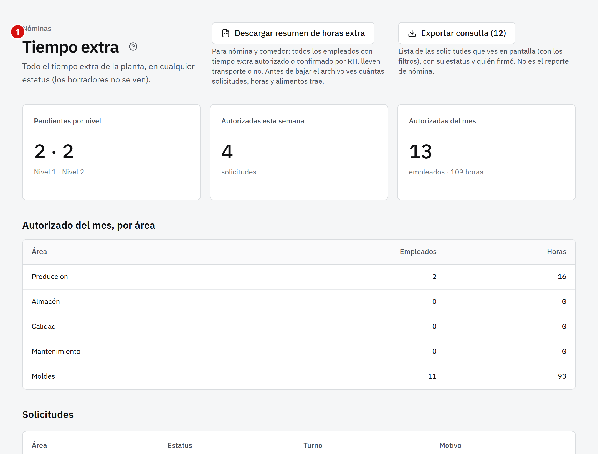
Tiempo extra muestra todas las solicitudes (sin los borradores) con filtros por área, estatus, fechas, turno y motivo, y deja descargar el resumen en Excel. Es de solo lectura.
También ves Solicitudes de transporte y el Formato de rutas (solo ver y descargar), Personal (con teléfono) y Por enviar al proveedor, donde puedes confirmar lo autorizado.
8. Preguntas frecuentes
Mi semana sale vacía.Al entrar se abre la última semana completa. Para la semana en curso toca la flecha «Semana siguiente». Si aun así no hay nada, no hay tiempo extra autorizado esa semana.
Faltan solicitudes en el formato.Solo entra lo autorizado. Mira el aviso de arriba: pendientes y devueltas no cuentan hasta que se autoricen; las vencidas no cuentan nunca (agrega a mano a quien sí trabajó).
Firmé un área y quedó mal.Pide a Recursos Humanos que la reabra; luego corriges y vuelves a firmar.
No puedo firmar ni descargar.Tienes cambios sin guardar. Toca Guardar cambios primero.
Se cerró mi sesión.Por seguridad se cierra a los 30 minutos sin usar. Tus cambios sin guardar se pierden: guarda seguido.